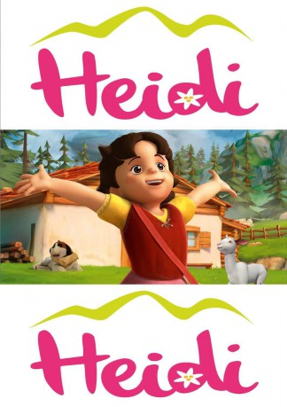

 
 IMDB-Wertung: 8.1 / 10
IMDB-Wertung: 8.1 / 10  Tomatometer: 100
Tomatometer: 100  Metascore: 0
Metascore: 0 
Heidi ist ein lebensfrohes und aufgeschlossenes Waisenkind, das bei seinem Großvater in den idyllischen Schweizer Alpen aufwächst. Schnell schließt Heidi Freundschaften und auf ihre Hilfe ist stets Verlass. Sie liebt die Freiheit des Almlebens, lernt dort aber auch, Verantwortung zu tragen. Durch ihre unbeschwerte Art zeigt Heidi, wie man an den Herausforderungen des Alltags wachsen und dabei Glück erfahren kann. Und mit ihrer Natürlichkeit und ihrem ehrlichen Charme schenkt Heidi anderen Menschen viel Mut und Lebensfreude.
Jahr: 2015
Dauer: 21 Minuten
FSK:
Land: Frankreich Studio: Studio 100 MediaTonspuren:
Untertitel:
Auflösung: 720p (1280x720) Größe: 128000 MB
Genre: Familie, TV-Serie
Regisseur: Jérôme Mouscadet
Drehbuch: Cecil Murphey
Soundtrack:
Darsteller:
- Beth Armstrong als Dete, Rottenmeir, Bridgette, Grandmother
- Peter McAllum als Grandfather,Mr Sesemann, Mr Keller
- Nicole Shostak als Peter, Mrs Keller
- Benoît Allemane als Grandfather
- Gabriel Bismuth als Karl
- Lucille Boudonnat als Clara Sesemann
- Thierry Gondet als Mister Bakker
- Evelyne Grandjean als Peter's Grandmother
- Emmylou Homs als Heidi
- Nathalie Homs als Narrator
- Monique Hore als Heidi
- Thierry Kazazian als Hans, Friedrich, Mister Traber
- Leslie Lipkins als Theresa
- Gilbert Lévy als Mister Keller
- Tess Meyer als Narrator
- Vanina Pradier als Miss Rottenmeier
- Céline Ronté als William
- Gilduin Tissier als Sebastian
- Julie Turin als Dete
- Jamie Croft als Karl,Sebastian, Mr Keller
- Sophia Morrison als Clara
- Charlotte Rose Hamlyn als Therasa, William
- Penny Cook als Grandmamma
- Kate Fitzpatrick als Barble
- Petra Barthel als Narrator
- Lisa Braun als Adelheid
- Dirk Bublies als Schoolteacher
- Werner Böhnke als Stationmaster
- Frank Ciazynski als Guard
- Hans-Jürgen Dittberner als Mr. Keller
- Rainer Doering als Hans
- Gundi Eberhard als Brigitte
- Cathlen Gawlich als Mrs. Keller
- Maria Hönig als Clara Sesemann
- Helmut Krauss als Grandfather
- Luise Lunow als Peter's Grandmother
- Léa Mariage als Heidi
- Nicolas Rathod als Karl
- Moritz Richter als Willi
- Liane Rudolph als Mrs. Rottenmeier
- Zalina Sanchez als Theresa
- Gerald Schaale als Mr. Bahner
- Nando Schmitz als Peter
- Nana Spier als Aunt Dete
- Stefan Staudinger als Park Ranger
- Bernhard Völger als Sebastian
- Wolfgang Wagner als Mr. Sesemann
- Almut Zydra als Bärbel
Datei: X:\Kinder Serien\Heidi 2013 S01\Heidi 2013 S01E01 Die Reise zum Grossvater.mkv seit 19.09.2016
Festplatte: Kinder-Filme+Trick
 Es gibt insgesamt 56 Filme in der Gruppe 'Kinder Serien'
Es gibt insgesamt 56 Filme in der Gruppe 'Kinder Serien'
")